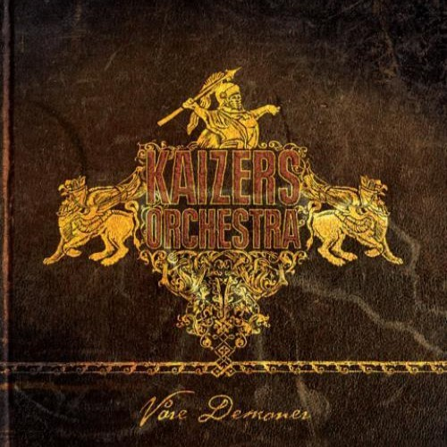

Våre demoner
|  |
|
Kaizers Orchestra:
Janove Ottesen: Vokal
Geir Zahl: Gitar
Terje Winterstø Røthing: Gitar
Øyvind Storesund: Kontrabass
Rune Solheim: Trommer
Helge Risa: Tangenter
Gjester:
Fiolin og bratsj: Gjertrud Økland
Cello: Bodil Vossgård Mathisrud
Tuba og trombone: Øyvind Grong
French horn: Steven James
Pauker: Ivar Atle Fjordheim
Klarinett: Jan Kåre Hystad
Banjo og nomikasjonsukulele på «Prosessen»: Jørgen Sandvik
Banjo på «Stormfull vals»: Jan Olav Olsson
Innspilt i uke to, 2009, i Bekkstudio, Jæren med Henrik Bekkeheimen som tekniker.
Produksjonen er utgitt med støtte fra Fond for Utøvende Kunstnere.
Mikset i duper studio av Yngve Sætre
Mastret i Masterhuset av Morten Lund
Produsert av Yngve Sætre og Janove Ottesen
Stryk og blås arrangementer: Janove Ottesen
Transkribert av Øyving Grong
Coverdesign: Bjørn…
Gosu design - www.gosu.no
Plateselskap: Petrolium Records
De får en del henvendelser som ender i spørsmålstegn, derfor tenkte vi å komme med disse i forløpet og forklare litt at hva som er greia med denne utgivelsen. Kort fortalt dreier det seg om miniinnspillinger av gamle Kaizer-låter. Dette er sanger som har falt utenfor albuminnspillingene våre fordi vi syntes de: 1. Ikke passet inn 2. Ikke ble helt ferdige 3. Ikke representerte det vi musikalsk sett ville stå for da de ble lagd.
Det er med andre ord fullt mulig å like låter herfra like godt, og til og med bedre, enn låtene på de regulære albumene. Bare skriv og spør, men doktoren vil nok svare at du er normal om du gjør det.
Det andre store spørsmålet blir: hvorfor ikke bare gi ut de opprinnelige demoene heller? Grunnen til det er først og fremst at mange av dem er så dårlig tatt opp, og så råttent fremført at det rett og slett olle lam forsvare en utgivelse. De er øvinger mer enn innspillinger egentlig, og kunne sikkert vært morsomt for blodfans å høre en gang eller to. Men vi tenkte mer på å gi ut «Våre Demoner» heller enn «Våre Demoer». Innspillinger var den beste måten å yte disse sangene rettferdig på, syntes vi, siden det etter vår mening var mye godt låtmateriale her. Dessuten var det gøy å øve dem inn igjen, vi følte vi gjenoppdaget de gamle glemte låtene, senket skuldrene og prøvde å hente ut det beste o hver enkelt av dem. Må være lov å kose seg litt óg på jobben.
Så her får du altså tre låter fra Ompa til du dør-demoene, tre fra Evig pint–demoene, fire fra Maestro-demoene og en fra Maskineri-demoen, i aldeles ukronologisk rekkefølge.
Håper dere liker løsungene våre, og gir dem et hjem og en meningsfull tilværelse der iut i den harde, vakre, virkelige verden.
Mvh Kaizers Orchestra
Hentet fra hefte som følget med albumet.